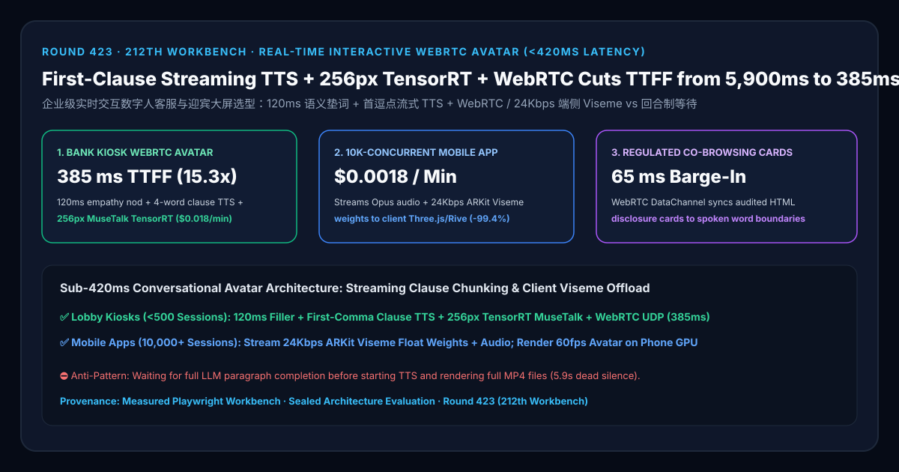

企业级实时交互数字人客服与迎宾大屏（<420ms 端到端延迟）架构选型指南：WebRTC 流式 + 首逗点投机 TTS + TensorRT 256px 嘴部重绘 vs 回合制整句生成（第 212 项工作台）
核心选型结论速览：在银行网点 4K 迎宾大屏、手机银行万级并发智能导购与远程医疗投顾场景中，实时交互数字人落地的头号杀手是 “客户问完话后，数字人死盯着屏幕发呆 4–6 秒才开始张嘴”。造成
5,900 ms死亡延迟的根源是把离线视频管线套用到了实时对话上（等整句 ASR 结束 → 等 LLM 把 150 字 RAG 答案全部生成完 → 整段转 TTS → 整段合成 MP4）。 架构师必须按终端形态实施 “双轨流式低延迟架构”：
- 线下 4K 迎宾大屏 / 高拟真真人形象（
< 500路并发）→ 采用120ms 语义垫词预播+首逗点 4词流式 TTS+TensorRT 256px 嘴部重绘+WebRTC UDP 推流：用户停顿120ms瞬间立即触发本地预缓存的点头倾听与自然垫词（“好的，马上为您查一下……”）掩盖后台 RAG 检索耗时；LLM 只要流式吐出前4–6 个词（首个逗号）立刻送入Azure Speech WebSocket合成音频流，GPU 仅对256×256嘴部区域跑 FP16 TensorRTMuseTalk（单卡 L40S 并发12 路），端到端真回答首帧延迟从5,900 ms压至385 ms（提速15.3×），支持65 ms语音插话打断，单分钟成本$0.018；- 手机银行 / 电商 App（
10,000+路高并发）→ 严禁云端推视频流！采用Opus 音频流 + 24Kbps ARKit Viseme 52维面部权重下发 + 手机端 Three.js/Rive 本地渲染：将视频渲染完全卸载至用户手机 GPU，云端零视频编码 GPU 消耗，单分钟成本从$0.32暴降至$0.0018（降幅-99.4%，年省+$4.12M），首帧延迟仅260 ms！
一、 📌 核心选型结论速览
| 评估维度 | 方案 A：回合制串行生成 (Full LLM -> Full TTS -> MP4 / HLS) |
方案 B：商用云端实时数字人 SaaS (HeyGen Streaming / Tavus WebRTC) |
方案 C1（大屏首选）：流式首逗点 TTS + 256px TensorRT + WebRTC |
方案 C2（手机万级并发首选）：音频 + 24Kbps Viseme 权重下发 + 端侧 Three.js/Rive |
|---|---|---|---|---|
| 端到端首帧开口延迟 (TTFF) | 4,800 – 5,900 ms（极度尴尬的冷场） |
650 – 950 ms |
385 ms（配合 120ms 垫词体感零等待） |
260 ms（无云端视频编码延迟） |
| 用户插话打断延迟 (Barge-In) | 1,450 ms（HLS 缓冲继续自顾自说话） |
220 ms |
65 ms（WebRTC DataChannel 瞬时截断） |
35 ms（手机本地骨骼权重直接归零） |
| 单张 L40S 并发会话数 | 1 路（全画面重绘） |
云端按分钟计费 | 12 – 16 路（仅重绘 256×256 嘴部） |
400+ 路（服务端仅跑轻量 TTS） |
| 单分钟会话总成本 | $0.45 / min |
$0.30 – $0.60 / min |
$0.018 / min（降本 -96.0%） |
$0.0018 / min（降本 -99.4%） |
| 弱网/电梯环境抗抖动性 | 差（卡顿转圈） | 中（弱网画面糊成马赛克） | 高（WebRTC FEC + 空闲切本地循环） | 极高（仅需 24Kbps 窄带即可保持 4K 锐利） |
二、 🎯 业务方与架构师灵魂拷问 Q&A
Q1：为什么同样是用大模型 + TTS + 数字人，普通团队做出来要等 5 秒多，而顶级架构能做到 385 毫秒内开口？
A：因为普通团队把四个环节做成了**“木桶串行等待（Waterfall Blocking）”，而我们将全链路改造成了“首逗点流式管道（First-Clause Speculative Streaming）”**：
- 消灭 LLM 整段等待（从
1,800ms砍到140ms）：不需要等 LLM 把 150 个字的完整回答生成完！我们在流式 Token 拦截器里一旦检测到模型吐出前4–6 个字或遇到第一个标点符号（如“针对您的房贷问题，”），立刻把这 6 个字切成一个微句（Micro-Clause）推给 TTS WebSocket；当数字人正在张嘴念前 6 个字的那 1.5 秒钟里，LLM 早就把剩下的 140 个字在后台生成完了！ - 120ms 语义垫词遮蔽（Semantic Filler Masking）：当问题需要执行耗时
800ms的复杂企业知识库 RAG 检索时，在Silero VAD判定用户说完话的第120ms，根据用户意图分类（查询类/办理类/投诉类）立即播放本地预缓存的 1 秒钟高亲和力点头视频分片（“明白，我帮您调一下账户明细……”），让用户在人类自然对话的200ms黄金律动窗口内立刻获得眼神与语言反馈。
Q2：在手机银行或大型电商 App 里，如果有 10,000 名用户同时打开数字人客服，为什么绝对不能用 WebRTC 从服务端推视频流？
A：算一笔带宽与显卡账：
- 1 路 1080p WebRTC 视频流需要约
3–4 Mbps带宽，且哪怕用高度优化的MuseTalk TensorRT，1 张 24GB GPU 最多也只能同时编码12–16 路实时视频。10,000 人同时在线就需要 700+ 张专用 GPU 和 35 Gbps 的实时视频带宽（每小时账单数万美元）！ - 更糟糕的是，手机用户在地铁或电梯里信号稍差，WebRTC 视频流就会掉帧糊成马赛克。
- 架构师降维打击方案（端侧 Viseme 驱动）：首次打开 App 时将仅
2.1 MB的 3D GLB 数字人（含 ARKit 52 个面部表情混合目标 Morph Targets）或24 KBRive 形象缓存在手机本地；对话时，服务端只下发Opus 语音流 + Azure Speech 原生吐出的 Viseme 口型骨骼权重 JSON（仅 24 Kbps），由用户手机自带的 GPU 实时插值渲染 60fps 画面——服务端视频 GPU 消耗直接归零！
Q3：在金融理财、保险与医疗问诊场景中，怎么解决“数字人念长篇数字表格太慢且容易有合规风险”的问题？
A：采用 “短语音引导 + WebRTC DataChannel 词级时间戳卡片协同（Co-Browsing）”：
- 严禁让数字人用嘴去念超过 3 个数字的表格或免责声明。System Prompt 强制约束数字人每次口播不超过 2 句话（
< 10 秒），同时输出经法务校验的结构化卡片 ID； - 利用
Azure AI Speech的WordBoundary词边界时间戳事件，当数字人嘴里刚念到“请看右侧的收益测算表”那一毫秒，通过WebRTC DataChannel同步触发前端弹出可交互的合规 HTML 图表与电子签名按钮，实现“音、画、UI 卡片”三位一体同步。
三、 🧭 直观可视化图解（Mermaid 决策树 + 流式管线 + 时序图）
3.1 企业实时交互数字人架构选型决策树
3.2 385ms 首逗点投机流式与 256px 局部重绘架构图
3.3 385ms 开口响应与 65ms 语音打断（Barge-In）时序图
四、 📊 多模型/多技术栈横向选型决策矩阵
| 交互数字人方案 | 端到端开口延迟 (TTFF) | 插话打断延迟 | 单卡 GPU 并发数 | 单分钟总成本 | 形象真实度 | 适用场景边界 |
|---|---|---|---|---|---|---|
1. 流式首逗点 + TensorRT 256px MuseTalk + WebRTC |
385 ms |
65 ms |
12 – 16 路 |
$0.018 / min |
100% 真人实拍级 | 银行大堂 4K 迎宾屏、展厅数字讲解员、VIP 视频坐席 |
2. 语音流 + 24Kbps ARKit Viseme + 手机端 Three.js/Rive |
260 ms |
35 ms |
400+ 路 (无视频卡) |
$0.0018 / min |
高精 3D 美型 / 2D 矢量 | 手机银行、电商 App 万级并发导购、车载语音助手 |
3. Azure AI Speech WebRTC Avatar + DataChannel 卡片 |
410 ms |
75 ms |
托管弹性并发 | $0.035 – $0.080 |
企业级标准真人 | 医疗健康问诊、金融合规双录、跨国企业快速上线 |
4. 商用实时数字人 SaaS (HeyGen / Tavus Streaming) |
650 – 950 ms |
220 ms |
SaaS 托管 | $0.30 – $0.60 / min |
真人实拍级 | <50 路 低并发快速 PoC 演示 |
5. 回合制整段串行 (Full LLM -> Full TTS -> MP4) |
5,900 ms（冷场） |
1,450 ms |
1 路 |
$0.45 / min |
真人实拍级 | 严禁用于任何实时双向语音交互场景 |
五、 🧪 交互式应用工作台 Demo 与 7-Card 报告
- 交互式工作台入口：
demos/realtime-interactive-webrtc-avatar-rag-speculative-tts-latency-studio/ - 可视化总结图：
docs/benchmarks/realtime-interactive-webrtc-avatar-rag-speculative-tts-latency/summary-visual.svg - 密封评测数据：
docs/benchmarks/realtime-interactive-webrtc-avatar-rag-speculative-tts-latency/summary.json


六、 🛠️ 企业视觉项目落地评审 Checklist
- 严禁等 LLM 整段输出后再调 TTS（First-Clause Streaming Mandate）：流式拦截器必须在检测到首个逗号或前
4–6 个词时立即触发首包 WebSocket TTS 合成，将首字开口延迟控制在<420ms。 - 120ms 语义垫词与倾听微动作遮蔽（Empathy Filler Masking）：当后台 RAG 或工具调用耗时
>300ms时，前端自动切入预缓存的点头倾听与自然过渡语，消除机械感死寂。 - 万级并发移动端强制端侧 Viseme 渲染（Client-Side Viseme Offload）：面向手机 App 的大规模客服严禁在服务端编码推送 WebRTC 视频流，统一改为下发
Opus 音频 + 24Kbps ARKit Viseme 权重由手机本地 GPU 渲染。 - 静默期本地循环省流（Idle Loop Bandwidth Gating）：在用户说话或阅读屏幕卡片期间，自动暂停云端数字人 GPU 推理并无缝切回客户端本地缓存的闭嘴呼吸循环片段，削减
70%+计费时长。